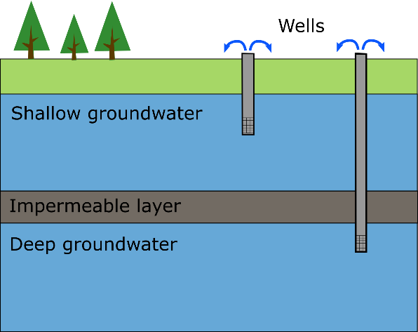

The depth of the groundwater abstraction is related to the sustainability of the water use and the likelihood of groundwater contamination. Here, we distinguish two types of groundwater: shallow and deep groundwater.
Whether groundwater is shallow or deep is not related to a specific depth. Instead, we use the term shallow groundwater to describe the layer of groundwater closest to the surface. When groundwater is divided into different levels by layers of impermeable material, like clay, the lower levels considered to be deep groundwater.

Deep groundwater may be plentiful, but is replenished much more slowly than shallow groundwater. Therefore, deep groundwater is more vulnerable to over-abstraction, where groundwater use is larger than recharge. In addition, pumping costs are higher when water is extracted from greater depths.
Shallow groundwater, on the other hand, is easier and cheaper to exploit. In addition, it is more likely to be replenished, although this does depend on the amount of rainfall and/or the availability of surface water in the region. The main risk in using shallow groundwater is that it is more vulnerable to contamination by human activities.
When information about which groundwater layer is being accessed is not available, we suggest using a depth of 100 meters (~300 feet) to differentiate between deep and shallow groundwater.